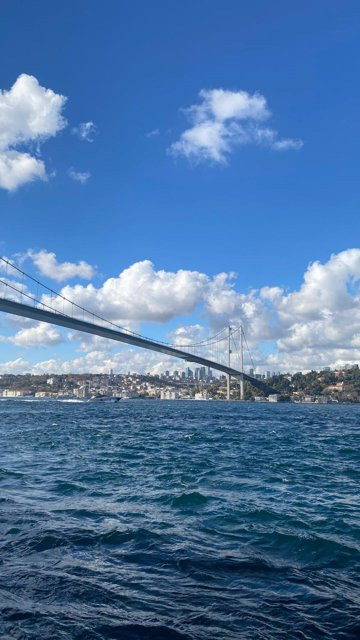
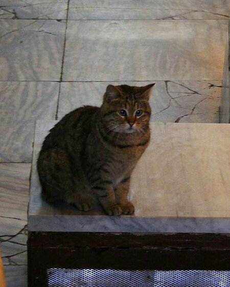
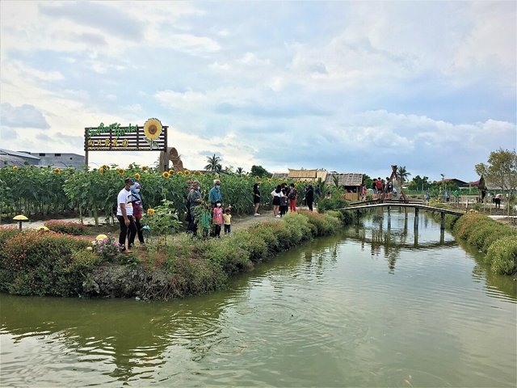
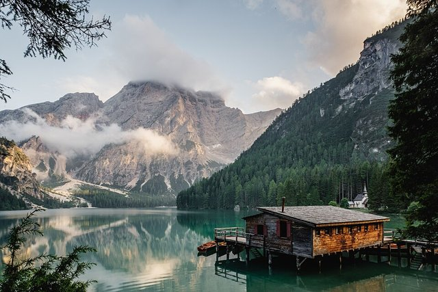
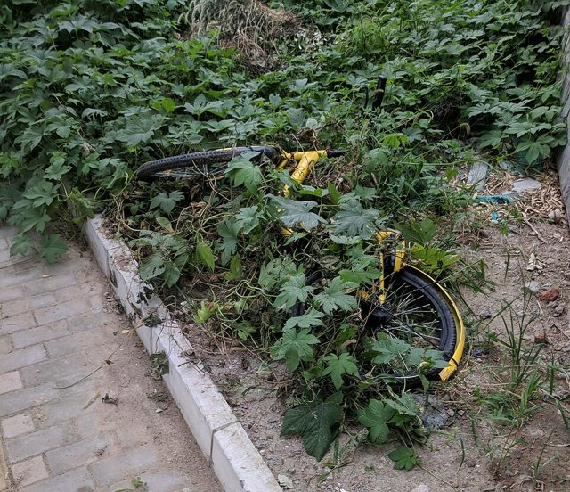

Kentte bir gün

Boğaz kıyısı

Ayasofya'nın kedisi

Park

Gar binası

Ayçiçeği bahçesi

Üretici pazarı


Terk edilmiş bisiklet

Yerinde görmek için haritayı açın.





Yerinde görmek için haritayı açın.